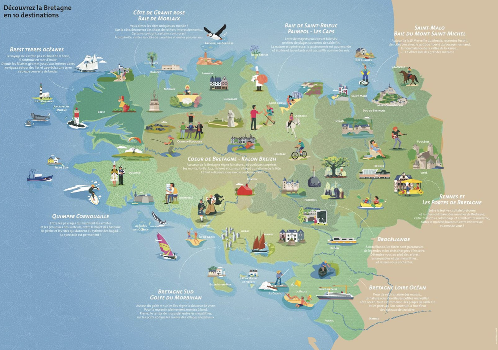

In città
La metro, Bus, ...
. Se la città è abbastanza grande, avrà porbabilmente una metro. Per potervi accedere, bisognerà comprare il ticket o, per i clienti più assidui un pass una carta simile alla carta di credito con un numero illimitati di accessi su un periodo di tempo.A seconda della categoria sociale in cui rientri, ci saranno diverse offerte: una meno cara per gli studenti e stagisti o altre categorie meno agiate e una per gli altri. Ci saranno anche diverse offerte in base alla frequenza alla quale utilizzerai la metro, o alle zone (per le grandi citt`) : biglietto singolo, pacchetto di biglietti, pass settimanale, mensile o annuale.
I trasporti sono gestiti di solito da una compangia, che cambia da citt` a città. A parigi si chiama RATP, a Rennes si chiama Star e così via. Le offerte, come i prezzi, possono variare in base alla città ma seguono le linee guide elencate sopra.
Per ottenere un pass bisognerà solitamente dimostrare di abitare nella città: una fattura a vostro nome basterà.
Nel caso la metro non ci fosse, tutte le città dispongono di un servizio di autobus. In francia sono abbastanza puntuali. Solitamente meno di 5 minuti di ritardo, di tanto in tanto 10. Il servizio bus di solito è gestito dalla stessa compagnia della metro e il biglietto o pass di solito è unico e valido per tutti i mezzi. Alcune città potrebbero avere altri mezzi di trasporto, come il tram, questo di solito sostituisce la metro nelle zone in cui per un motivo o per un altro, la costruzione della metro non era possibile o non era conveniente. Anche in questo caso, di solito il biglietto preso per il bus o per la metro sar` valido anche per il tram.

Bikesharing, carsharing, monopattini, scooter, ...
. È cominciato poco a poco, timidamente, nelle grandi città qualche anno fa. Ora quasi tutte le città dispongono di una soluzione di trasporto dolce, ovvero che non comporti l'uso della benzina o similari.Tra questi servizi, il più comune è il bikesharing, che consiste in delle bici, elettriche o meno, messe dal comune a disposizione in affitto in delle stazioni dedicate e che è possibile affittare, pagando un prezzo generalemente basso (qualche euro al massimo).
A questo, si sono aggiunti servizi di noleggio di vari altri mezzi di trasporto : i monopattini (trotinette in francese), gli scooter, le macchine etc. In questo caso non è il comune a offrire il servizio, ma compagnie private. Tra queste la conosciutissima Uber per le bici, o Lime, Bird per i monopattini. Queste soluzioni sono di solito più care, ma la qualità è spesso migliore.